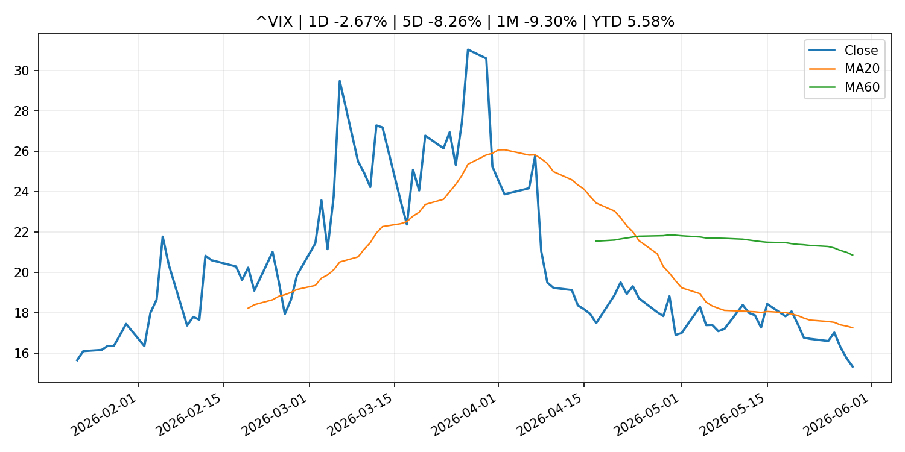
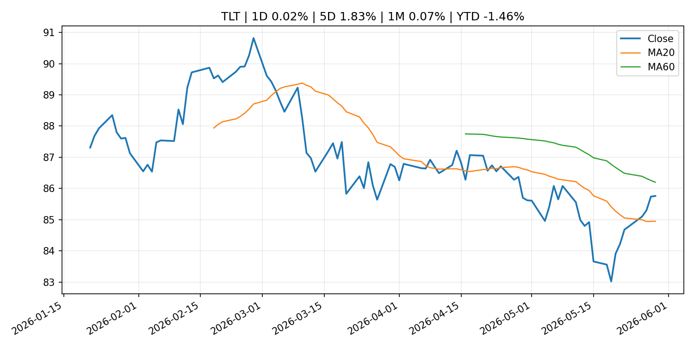
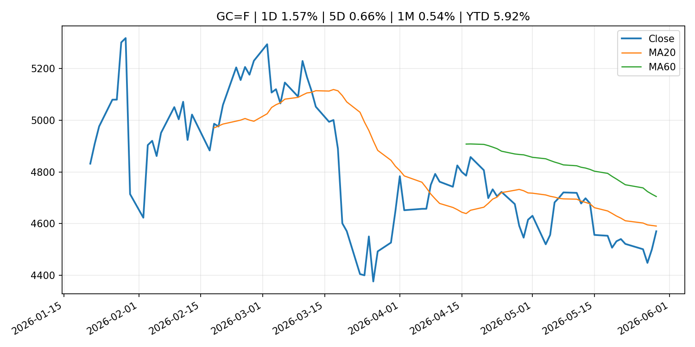
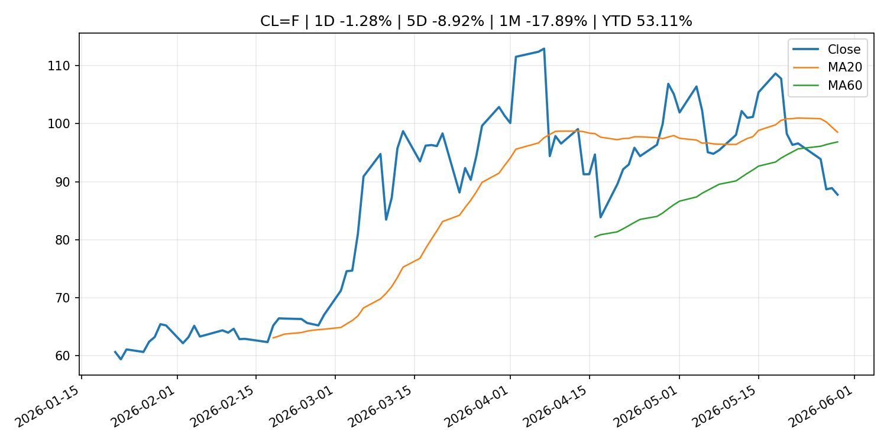
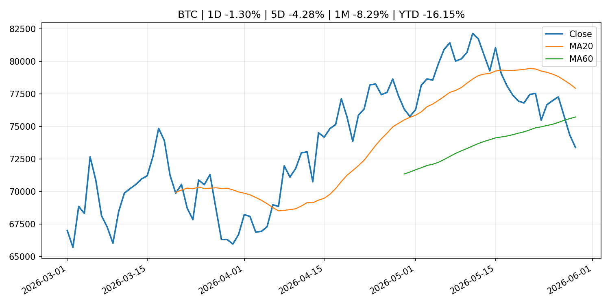
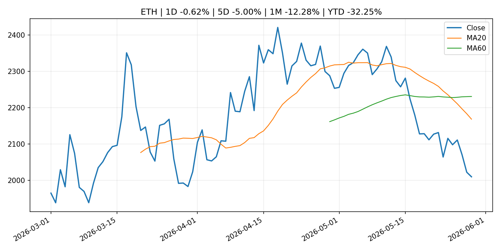
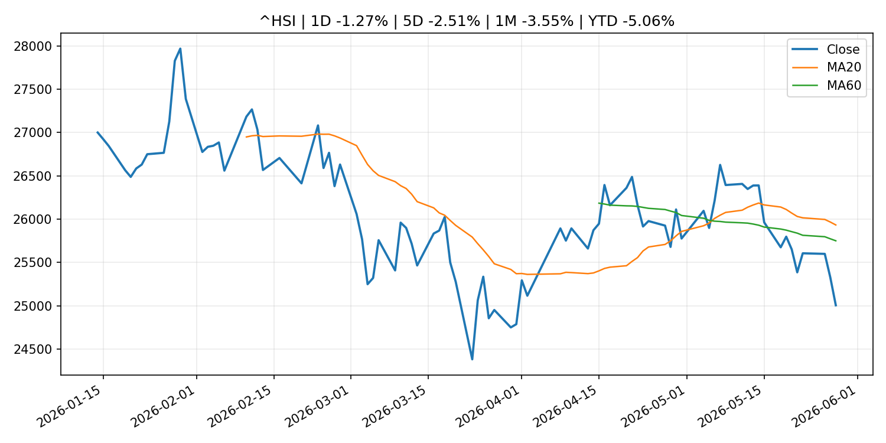

Global Macro Morning Briefing - 2026-05-30
Not financial advice / 非投资建议。
0. 今日总览
- 市场状态：unknown。市场信号不足，暂不判断明确状态。
- 今日三大主线：
- geopolitical_risk: Bitcoin, ether little-changed despite record stocks, falling oil and easing war fears
- central_bank_speech: Fed Governor Michelle Bowman warns against hiking interest rates because of inflation spike
- regulation: SEC Proposes Rescission of Climate-Related Disclosure Rules
- 一句话结论：今日晨报重点关注：地缘风险可能推升避险需求、能源价格和市场波动率。；央行官员表态可能影响市场对下一次会议的定价。。跨资产方面，SPY 1D 0.25%；QQQ 1D 0.37%；^VIX 1D -2.67%；TLT 1D 0.02%；GC=F 1D 1.57%；CL=F 1D -1.28%；BTC 1D -1.30%；ETH 1D -0.62%；市场信号不足，暂不判断明确状态。政策、通胀、利率、美元、美债、能源和加密监管仍是主要观察线索。所有结论仅基于公开数据与短摘要整理，不构成投资建议。
1. 隔夜跨资产市场
- 美股：SPY 1D 0.25%，QQQ 1D 0.37%，整体趋势需结合 VIX 和利率确认。
- 美债/美元：TLT 1D 0.02%，美元指数 1D -0.08%，是判断折现率压力的核心线索。
- 黄金/原油：黄金 1D 1.57%，原油 1D -1.28%，用于观察避险、通胀和地缘风险。
- 加密：BTC 1D -1.30%，ETH 1D -0.62%，关注是否独立于纳指走出加密自身行情。
- 港股/A股：恒生 1D -1.27%，沪深300/上证 1D n/a，重点看中国政策预期与人民币线索。
- 风险观察：关注后续数据是否确认当前跨资产信号。
US_EQUITY
| symbol | latest close | 1D | 5D | 1M | YTD | trend |
|---|---|---|---|---|---|---|
| SPY | 756.48 | 0.25% | 1.85% | 6.31% | 10.73% | strong_uptrend |
| QQQ | 738.31 | 0.37% | 3.33% | 11.60% | 20.42% | strong_uptrend |
| DIA | 510.78 | 0.74% | 1.52% | 4.52% | 5.61% | strong_uptrend |
| IWM | 290.43 | -0.55% | 2.81% | 6.74% | 16.74% | strong_uptrend |
| VTI | 372.54 | 0.24% | 2.04% | 6.38% | 10.77% | strong_uptrend |
US_MACRO_MARKET
| symbol | latest close | 1D | 5D | 1M | YTD | trend |
|---|---|---|---|---|---|---|
| ^VIX | 15.32 | -2.67% | -8.26% | -9.30% | 5.58% | strong_downtrend |
| DX-Y.NYB | 98.94 | -0.08% | -0.25% | 0.02% | 0.53% | range_bound |
| TLT | 85.76 | 0.02% | 1.83% | 0.07% | -1.46% | range_bound |
| IEF | 94.65 | 0.12% | 0.91% | -0.16% | -1.49% | range_bound |
COMMODITIES
| symbol | latest close | 1D | 5D | 1M | YTD | trend |
|---|---|---|---|---|---|---|
| GC=F | 4,569.90 | 1.57% | 0.66% | 0.54% | 5.92% | downtrend |
| SI=F | 75.58 | -0.08% | -1.08% | 5.61% | 7.13% | range_bound |
| CL=F | 87.76 | -1.28% | -8.92% | -17.89% | 53.11% | range_bound |
| BZ=F | 91.70 | -2.14% | -10.61% | -22.31% | 50.95% | range_bound |
| NG=F | 3.27 | -0.37% | 8.45% | 23.65% | -9.54% | strong_uptrend |
| HG=F | 6.39 | -0.03% | 2.19% | 8.77% | 13.37% | strong_uptrend |
HK_MARKET
| symbol | latest close | 1D | 5D | 1M | YTD | trend |
|---|---|---|---|---|---|---|
| ^HSI | 25,006.16 | -1.27% | -2.51% | -3.55% | -5.06% | range_bound |
| 0700.HK | 427.20 | 0.52% | -2.69% | -9.84% | -31.43% | strong_downtrend |
| 9988.HK | 120.90 | -0.74% | -4.05% | -4.43% | -18.86% | range_bound |
| 3690.HK | 73.45 | 0.20% | -10.54% | -8.53% | -29.78% | range_bound |
| 1810.HK | 28.04 | -1.82% | -5.46% | -6.28% | -30.39% | strong_downtrend |
| 1211.HK | 91.30 | 1.11% | 0.83% | -11.96% | -7.54% | strong_downtrend |
CRYPTO
| symbol | latest close | 1D | 5D | 1M | YTD | trend |
|---|---|---|---|---|---|---|
| BTC | 73,388.40 | -1.30% | -4.28% | -8.29% | -16.15% | range_bound |
| ETH | 2,009.93 | -0.62% | -5.00% | -12.28% | -32.25% | strong_downtrend |
| SOLANA | 81.93 | -0.46% | -4.33% | -7.35% | -34.20% | range_bound |
| BINANCECOIN | 642.35 | -0.90% | -2.03% | 0.82% | -25.58% | range_bound |
| RIPPLE | 1.32 | 1.36% | -2.49% | -4.63% | -28.07% | range_bound |
2. 今日最重要的 10 条新闻
1. Bitcoin, ether little-changed despite record stocks, falling oil and easing war fears
- 来源：CoinDesk
- 时间：2026-05-29T04:41:55+00:00
- 地区：global
- 事件类型：geopolitical_risk
- 重要性层级：Tier 1
- 一句话摘要：Bitcoin, ether little-changed despite record stocks, falling oil and easing war fears
- 为什么重要：地缘风险可能推升避险需求、能源价格和市场波动率。
- 可能影响：主要影响 QQQ，方向为 positive，强度 high；宽松预期降低折现率，有利于成长股。
- 资产：QQQ 方向：positive 强度：high 原因：宽松预期降低折现率，有利于成长股。
- 资产：SPY 方向：positive 强度：high 原因：宽松政策通常改善风险偏好。
- 资产：TLT 方向：positive 强度：high 原因：降息预期通常推升长债价格。
- 资产：DXY 方向：negative 强度：medium 原因：利差预期回落通常压制美元。
- 资产：GC=F 方向：positive 强度：medium 原因：实际利率下降通常利好黄金。
- 资产：BTC 方向：positive 强度：high 原因：流动性改善通常支持加密资产。
- 原文链接：https://www.coindesk.com/markets/2026/05/29/bitcoin-ether-little-changed-despite-record-stocks-falling-oil-and-easing-war-fears
2. Fed Governor Michelle Bowman warns against hiking interest rates because of inflation spike
- 来源：CNBC Economy
- 时间：2026-05-29T16:39:46+00:00
- 地区：US
- 事件类型：central_bank_speech
- 重要性层级：Tier 2
- 一句话摘要：Bowman said reacting to the inflation surge, driven primarily by energy prices and tariffs, has proven ineffective.
- 为什么重要：央行官员表态可能影响市场对下一次会议的定价。
- 可能影响：主要影响 DXY，方向为 positive，强度 high；通胀压力可能推高政策利率预期并支撑美元。
- 资产：DXY 方向：positive 强度：high 原因：通胀压力可能推高政策利率预期并支撑美元。
- 资产：TLT 方向：negative 强度：high 原因：通胀上行通常推升收益率、压低长债价格。
- 资产：QQQ 方向：negative 强度：high 原因：更高利率对成长股估值折现率不利。
- 资产：SPY 方向：mixed 强度：medium 原因：名义增长可能支撑收入，但更高利率压制估值。
- 资产：GC=F 方向：mixed 强度：medium 原因：通胀对黄金是支撑，但实际利率上行会形成压力。
- 资产：BTC 方向：mixed 强度：medium 原因：抗通胀叙事和流动性收紧可能相互抵消。
- 原文链接：https://www.cnbc.com/2026/05/29/feds-bowman-warns-against-hiking-interest-rates-due-to-inflation-spike.html
3. SEC Proposes Rescission of Climate-Related Disclosure Rules
- 来源：SEC Press Releases
- 时间：2026-05-29T10:50:00-04:00
- 地区：US
- 事件类型：regulation
- 重要性层级：Tier 2
- 一句话摘要：The Securities and Exchange Commission today proposed the rescission of overly burdensome and costly rules that require companies to provide certain climate-related information in their registration statements and annual reports. The Commission’s…
- 为什么重要：监管变化会改变行业盈利预期和资产风险溢价。
- 可能影响：主要影响 BTC，方向为 mixed，强度 high；加密监管或 ETF 进展会改变 BTC 的资金流和风险溢价。
- 资产：BTC 方向：mixed 强度：high 原因：加密监管或 ETF 进展会改变 BTC 的资金流和风险溢价。
- 资产：ETH 方向：mixed 强度：high 原因：监管框架会影响 ETH 产品化和机构参与度。
- 资产：COIN 方向：mixed 强度：medium 原因：监管清晰度和执法风险会影响交易平台估值。
- 资产：crypto market 方向：mixed 强度：high 原因：信息影响整个加密市场结构，但方向取决于细节。
- 原文链接：https://www.sec.gov/newsroom/press-releases/2026-49-sec-proposes-rescission-climate-related-disclosure-rules
4. ‘The banks will not accept it’: Dimon escalates battle over stablecoin rewards in CLARITY Act debate
- 来源：CoinDesk
- 时间：2026-05-29T20:03:52+00:00
- 地区：global
- 事件类型：crypto_market_structure
- 重要性层级：Tier 2
- 一句话摘要：‘The banks will not accept it’: Dimon escalates battle over stablecoin rewards in CLARITY Act debate
- 为什么重要：加密市场结构和监管变化会影响 BTC、ETH 及相关股票的风险溢价。
- 可能影响：主要影响 BTC，方向为 mixed，强度 high；加密监管或 ETF 进展会改变 BTC 的资金流和风险溢价。
- 资产：BTC 方向：mixed 强度：high 原因：加密监管或 ETF 进展会改变 BTC 的资金流和风险溢价。
- 资产：ETH 方向：mixed 强度：high 原因：监管框架会影响 ETH 产品化和机构参与度。
- 资产：COIN 方向：mixed 强度：medium 原因：监管清晰度和执法风险会影响交易平台估值。
- 资产：crypto market 方向：mixed 强度：high 原因：信息影响整个加密市场结构，但方向取决于细节。
- 原文链接：https://www.coindesk.com/policy/2026/05/29/the-banks-will-not-accept-it-dimon-escalates-battle-over-stablecoin-rewards-in-clarity-act-debate
5. Paxos wins SEC approval to clear U.S. stocks on blockchain
- 来源：CoinDesk
- 时间：2026-05-29T12:28:24+00:00
- 地区：global
- 事件类型：regulation
- 重要性层级：Tier 2
- 一句话摘要：Paxos wins SEC approval to clear U.S. stocks on blockchain
- 为什么重要：监管变化会改变行业盈利预期和资产风险溢价。
- 可能影响：主要影响 BTC，方向为 mixed，强度 high；加密监管或 ETF 进展会改变 BTC 的资金流和风险溢价。
- 资产：BTC 方向：mixed 强度：high 原因：加密监管或 ETF 进展会改变 BTC 的资金流和风险溢价。
- 资产：ETH 方向：mixed 强度：high 原因：监管框架会影响 ETH 产品化和机构参与度。
- 资产：COIN 方向：mixed 强度：medium 原因：监管清晰度和执法风险会影响交易平台估值。
- 资产：crypto market 方向：mixed 强度：high 原因：信息影响整个加密市场结构，但方向取决于细节。
- 原文链接：https://www.coindesk.com/policy/2026/05/29/paxos-is-first-blockchain-firm-to-provide-settlement-and-clearing-services-following-sec-approval
6. Crypto trading firm FalconX confidentially files with SEC for IPO, hires bankers
- 来源：CoinDesk
- 时间：2026-05-28T19:53:38+00:00
- 地区：global
- 事件类型：regulation
- 重要性层级：Tier 2
- 一句话摘要：Crypto trading firm FalconX confidentially files with SEC for IPO, hires bankers
- 为什么重要：监管变化会改变行业盈利预期和资产风险溢价。
- 可能影响：主要影响 BTC，方向为 mixed，强度 high；加密监管或 ETF 进展会改变 BTC 的资金流和风险溢价。
- 资产：BTC 方向：mixed 强度：high 原因：加密监管或 ETF 进展会改变 BTC 的资金流和风险溢价。
- 资产：ETH 方向：mixed 强度：high 原因：监管框架会影响 ETH 产品化和机构参与度。
- 资产：COIN 方向：mixed 强度：medium 原因：监管清晰度和执法风险会影响交易平台估值。
- 资产：crypto market 方向：mixed 强度：high 原因：信息影响整个加密市场结构，但方向取决于细节。
- 原文链接：https://www.coindesk.com/business/2026/05/28/crypto-trading-firm-falconx-confidentially-files-with-sec-for-ipo-hires-bankers
7. Tether's U.S.-focused stablecoin grows over 500% in a month, but still lags main rivals
- 来源：CoinDesk
- 时间：2026-05-28T18:53:40+00:00
- 地区：global
- 事件类型：crypto_market_structure
- 重要性层级：Tier 2
- 一句话摘要：Tether's U.S.-focused stablecoin grows over 500% in a month, but still lags main rivals
- 为什么重要：加密市场结构和监管变化会影响 BTC、ETH 及相关股票的风险溢价。
- 可能影响：主要影响 BTC，方向为 mixed，强度 high；加密监管或 ETF 进展会改变 BTC 的资金流和风险溢价。
- 资产：BTC 方向：mixed 强度：high 原因：加密监管或 ETF 进展会改变 BTC 的资金流和风险溢价。
- 资产：ETH 方向：mixed 强度：high 原因：监管框架会影响 ETH 产品化和机构参与度。
- 资产：COIN 方向：mixed 强度：medium 原因：监管清晰度和执法风险会影响交易平台估值。
- 资产：crypto market 方向：mixed 强度：high 原因：信息影响整个加密市场结构，但方向取决于细节。
- 原文链接：https://www.coindesk.com/business/2026/05/28/tether-s-u-s-focused-stablecoin-grows-over-500-in-a-month-but-still-lags-main-rivals
8. Gap and American Eagle shares both get crushed — and neither retailer is blaming the economy
- 来源：MarketWatch Top Stories
- 时间：2026-05-29T21:49:00+00:00
- 地区：US
- 事件类型：earnings
- 重要性层级：Tier 2
- 一句话摘要：Despite earnings that underwhelmed investors, executives at both Gap and American Eagle Outfitters said nothing is wrong with the economy.
- 为什么重要：大型科技股盈利和资本开支会影响纳指、半导体和 AI 交易主线。
- 可能影响：可能影响利率、汇率、风险资产或大宗商品预期，但当前公开信息不足以判断明确方向。
- 资产：暂无明确资产映射
- 方向：unknown
- 强度：low
- 原因：公开信息不足以判断方向。
- 原文链接：https://www.marketwatch.com/story/gap-and-american-eagle-stock-are-both-getting-crushed-and-neither-retailer-is-blaming-the-economy-6290fa6a?mod=mw_rss_topstories
9. Dell’s stunning 33% stock rally gave a big boost to shares of other server makers
- 来源：MarketWatch Top Stories
- 时间：2026-05-29T21:00:00+00:00
- 地区：US
- 事件类型：earnings
- 重要性层级：Tier 2
- 一句话摘要：Dell’s blowout earnings report is highlighting how the AI buildout is also driving demand for old-school computing.
- 为什么重要：大型科技股盈利和资本开支会影响纳指、半导体和 AI 交易主线。
- 可能影响：可能影响利率、汇率、风险资产或大宗商品预期，但当前公开信息不足以判断明确方向。
- 资产：暂无明确资产映射
- 方向：unknown
- 强度：low
- 原因：公开信息不足以判断方向。
- 原文链接：https://www.marketwatch.com/story/dells-stunning-30-stock-rally-is-giving-a-big-boost-to-shares-of-other-server-makers-78292f16?mod=mw_rss_topstories
10. Federal Reserve Board issues enforcement actions with former employee of Atlantic Union Bank and former employee of Frost Bank
- 来源：Federal Reserve Press Releases
- 时间：2026-05-28T15:00:00+00:00
- 地区：US
- 事件类型：regulation
- 重要性层级：Tier 2
- 一句话摘要：Federal Reserve Board issues enforcement actions with former employee of Atlantic Union Bank and former employee of Frost Bank
- 为什么重要：监管变化会改变行业盈利预期和资产风险溢价。
- 可能影响：可能影响利率、汇率、风险资产或大宗商品预期，但当前公开信息不足以判断明确方向。
- 资产：暂无明确资产映射
- 方向：unknown
- 强度：low
- 原因：公开信息不足以判断方向。
- 原文链接：https://www.federalreserve.gov/newsevents/pressreleases/enforcement20260528a.htm
3. 政策与央行观察
1. Fed Governor Michelle Bowman warns against hiking interest rates because of inflation spike
- 来源：CNBC Economy
- 时间：2026-05-29T16:39:46+00:00
- 地区：US
- 事件类型：central_bank_speech
- 重要性层级：Tier 2
- 一句话摘要：Bowman said reacting to the inflation surge, driven primarily by energy prices and tariffs, has proven ineffective.
- 为什么重要：央行官员表态可能影响市场对下一次会议的定价。
- 可能影响：主要影响 DXY，方向为 positive，强度 high；通胀压力可能推高政策利率预期并支撑美元。
- 资产：DXY 方向：positive 强度：high 原因：通胀压力可能推高政策利率预期并支撑美元。
- 资产：TLT 方向：negative 强度：high 原因：通胀上行通常推升收益率、压低长债价格。
- 资产：QQQ 方向：negative 强度：high 原因：更高利率对成长股估值折现率不利。
- 资产：SPY 方向：mixed 强度：medium 原因：名义增长可能支撑收入，但更高利率压制估值。
- 资产：GC=F 方向：mixed 强度：medium 原因：通胀对黄金是支撑，但实际利率上行会形成压力。
- 资产：BTC 方向：mixed 强度：medium 原因：抗通胀叙事和流动性收紧可能相互抵消。
- 原文链接：https://www.cnbc.com/2026/05/29/feds-bowman-warns-against-hiking-interest-rates-due-to-inflation-spike.html
2. SEC Proposes Rescission of Climate-Related Disclosure Rules
- 来源：SEC Press Releases
- 时间：2026-05-29T10:50:00-04:00
- 地区：US
- 事件类型：regulation
- 重要性层级：Tier 2
- 一句话摘要：The Securities and Exchange Commission today proposed the rescission of overly burdensome and costly rules that require companies to provide certain climate-related information in their registration statements and annual reports. The Commission’s…
- 为什么重要：监管变化会改变行业盈利预期和资产风险溢价。
- 可能影响：主要影响 BTC，方向为 mixed，强度 high；加密监管或 ETF 进展会改变 BTC 的资金流和风险溢价。
- 资产：BTC 方向：mixed 强度：high 原因：加密监管或 ETF 进展会改变 BTC 的资金流和风险溢价。
- 资产：ETH 方向：mixed 强度：high 原因：监管框架会影响 ETH 产品化和机构参与度。
- 资产：COIN 方向：mixed 强度：medium 原因：监管清晰度和执法风险会影响交易平台估值。
- 资产：crypto market 方向：mixed 强度：high 原因：信息影响整个加密市场结构，但方向取决于细节。
- 原文链接：https://www.sec.gov/newsroom/press-releases/2026-49-sec-proposes-rescission-climate-related-disclosure-rules
3. ‘The banks will not accept it’: Dimon escalates battle over stablecoin rewards in CLARITY Act debate
- 来源：CoinDesk
- 时间：2026-05-29T20:03:52+00:00
- 地区：global
- 事件类型：crypto_market_structure
- 重要性层级：Tier 2
- 一句话摘要：‘The banks will not accept it’: Dimon escalates battle over stablecoin rewards in CLARITY Act debate
- 为什么重要：加密市场结构和监管变化会影响 BTC、ETH 及相关股票的风险溢价。
- 可能影响：主要影响 BTC，方向为 mixed，强度 high；加密监管或 ETF 进展会改变 BTC 的资金流和风险溢价。
- 资产：BTC 方向：mixed 强度：high 原因：加密监管或 ETF 进展会改变 BTC 的资金流和风险溢价。
- 资产：ETH 方向：mixed 强度：high 原因：监管框架会影响 ETH 产品化和机构参与度。
- 资产：COIN 方向：mixed 强度：medium 原因：监管清晰度和执法风险会影响交易平台估值。
- 资产：crypto market 方向：mixed 强度：high 原因：信息影响整个加密市场结构，但方向取决于细节。
- 原文链接：https://www.coindesk.com/policy/2026/05/29/the-banks-will-not-accept-it-dimon-escalates-battle-over-stablecoin-rewards-in-clarity-act-debate
4. Paxos wins SEC approval to clear U.S. stocks on blockchain
- 来源：CoinDesk
- 时间：2026-05-29T12:28:24+00:00
- 地区：global
- 事件类型：regulation
- 重要性层级：Tier 2
- 一句话摘要：Paxos wins SEC approval to clear U.S. stocks on blockchain
- 为什么重要：监管变化会改变行业盈利预期和资产风险溢价。
- 可能影响：主要影响 BTC，方向为 mixed，强度 high；加密监管或 ETF 进展会改变 BTC 的资金流和风险溢价。
- 资产：BTC 方向：mixed 强度：high 原因：加密监管或 ETF 进展会改变 BTC 的资金流和风险溢价。
- 资产：ETH 方向：mixed 强度：high 原因：监管框架会影响 ETH 产品化和机构参与度。
- 资产：COIN 方向：mixed 强度：medium 原因：监管清晰度和执法风险会影响交易平台估值。
- 资产：crypto market 方向：mixed 强度：high 原因：信息影响整个加密市场结构，但方向取决于细节。
- 原文链接：https://www.coindesk.com/policy/2026/05/29/paxos-is-first-blockchain-firm-to-provide-settlement-and-clearing-services-following-sec-approval
5. Crypto trading firm FalconX confidentially files with SEC for IPO, hires bankers
- 来源：CoinDesk
- 时间：2026-05-28T19:53:38+00:00
- 地区：global
- 事件类型：regulation
- 重要性层级：Tier 2
- 一句话摘要：Crypto trading firm FalconX confidentially files with SEC for IPO, hires bankers
- 为什么重要：监管变化会改变行业盈利预期和资产风险溢价。
- 可能影响：主要影响 BTC，方向为 mixed，强度 high；加密监管或 ETF 进展会改变 BTC 的资金流和风险溢价。
- 资产：BTC 方向：mixed 强度：high 原因：加密监管或 ETF 进展会改变 BTC 的资金流和风险溢价。
- 资产：ETH 方向：mixed 强度：high 原因：监管框架会影响 ETH 产品化和机构参与度。
- 资产：COIN 方向：mixed 强度：medium 原因：监管清晰度和执法风险会影响交易平台估值。
- 资产：crypto market 方向：mixed 强度：high 原因：信息影响整个加密市场结构，但方向取决于细节。
- 原文链接：https://www.coindesk.com/business/2026/05/28/crypto-trading-firm-falconx-confidentially-files-with-sec-for-ipo-hires-bankers
6. Tether's U.S.-focused stablecoin grows over 500% in a month, but still lags main rivals
- 来源：CoinDesk
- 时间：2026-05-28T18:53:40+00:00
- 地区：global
- 事件类型：crypto_market_structure
- 重要性层级：Tier 2
- 一句话摘要：Tether's U.S.-focused stablecoin grows over 500% in a month, but still lags main rivals
- 为什么重要：加密市场结构和监管变化会影响 BTC、ETH 及相关股票的风险溢价。
- 可能影响：主要影响 BTC，方向为 mixed，强度 high；加密监管或 ETF 进展会改变 BTC 的资金流和风险溢价。
- 资产：BTC 方向：mixed 强度：high 原因：加密监管或 ETF 进展会改变 BTC 的资金流和风险溢价。
- 资产：ETH 方向：mixed 强度：high 原因：监管框架会影响 ETH 产品化和机构参与度。
- 资产：COIN 方向：mixed 强度：medium 原因：监管清晰度和执法风险会影响交易平台估值。
- 资产：crypto market 方向：mixed 强度：high 原因：信息影响整个加密市场结构，但方向取决于细节。
- 原文链接：https://www.coindesk.com/business/2026/05/28/tether-s-u-s-focused-stablecoin-grows-over-500-in-a-month-but-still-lags-main-rivals
7. Federal Reserve Board issues enforcement actions with former employee of Atlantic Union Bank and former employee of Frost Bank
- 来源：Federal Reserve Press Releases
- 时间：2026-05-28T15:00:00+00:00
- 地区：US
- 事件类型：regulation
- 重要性层级：Tier 2
- 一句话摘要：Federal Reserve Board issues enforcement actions with former employee of Atlantic Union Bank and former employee of Frost Bank
- 为什么重要：监管变化会改变行业盈利预期和资产风险溢价。
- 可能影响：可能影响利率、汇率、风险资产或大宗商品预期，但当前公开信息不足以判断明确方向。
- 资产：暂无明确资产映射
- 方向：unknown
- 强度：low
- 原因：公开信息不足以判断方向。
- 原文链接：https://www.federalreserve.gov/newsevents/pressreleases/enforcement20260528a.htm
4. 市场异动与图表
- Gold 上涨 1.57%
- Oil 下跌 -1.28%
SPY

QQQ

^VIX

TLT

GC=F

CL=F

BTC

ETH

^HSI

5. 华尔街与机构公开观点
- 暂无可靠公开观点。
6. 今日重点关注
- 经济数据：经济数据：暂无可靠公开日历数据；如配置经济日历源后可自动填充。
- 央行讲话：央行讲话：暂无可靠公开日历数据；重点跟踪 Fed、ECB、BoJ、PBOC 官网 RSS。
- 财报：财报：暂无可靠数据。
- 政策事件：政策事件：暂无可靠数据。
- 风险提醒：风险提醒：关注数据源失败项、突发地缘风险、利率和美元的二阶反应。
7. 英文金融表达与宏观概念
- inflation expectations：通胀预期，指家庭、企业或市场对未来通胀的预估。 例句：Inflation expectations can shape wage bargaining and bond yields.
- real yield：实际收益率，名义利率扣除通胀预期后的收益率。 例句：Gold often reacts more to real yields than nominal yields.
- risk-off：避险模式，资金偏向美元、国债、黄金等防御资产。 例句：A geopolitical shock can push markets into risk-off mode.
- supply disruption：供给扰动，通常指能源或商品供应受冲突、减产或天气影响。 例句：Supply disruption can lift oil prices and inflation expectations.
- market structure：市场结构，指交易、托管、清算、ETF、监管等制度安排。 例句：Crypto market structure rules can affect institutional participation.
- terminal rate：终端利率，市场预期本轮加息周期的最高政策利率。 例句：A higher terminal rate can pressure growth stocks.
8. 背景材料
- A mystery man tried to buy Playboy’s high-end lingerie business. It turned out to all be a scam.（MarketWatch Top Stories，other）：Prosecutors say Kevin Juin used money he raised to buy the company Honey Birdette to purchase luxury watches, jewelry, private-club memberships and OnlyFans subscriptions.
- Space stocks tumble after a Blue Origin rocket explodes and SpaceX’s valuation gets a reality check（MarketWatch Top Stories，other）：The red-hot space sector was feeling some heat on Friday, cooling from some of the spectacular gains seen in May.
- U.S. regulator says 24/7 trading is great for crypto, may not be fit for other sectors（CoinDesk，other）：U.S. regulator says 24/7 trading is great for crypto, may not be fit for other sectors
- Live markets: Bitcoin shrugs off early decline, but two-month winning streak is in jeopardy（CoinDesk，other）：Live markets: Bitcoin shrugs off early decline, but two-month winning streak is in jeopardy
- Bitcoin underperforms risk assets as record 9th day of ETF outflows signal waning demand（CoinDesk，other）：Bitcoin underperforms risk assets as record 9th day of ETF outflows signal waning demand
- Bitcoin ETF outflows reach record 9-day streak as investors pull $2.8 billion（CoinDesk，other）：Bitcoin ETF outflows reach record 9-day streak as investors pull $2.8 billion
- Bitcoin slides to April lows as crypto diverges from record-chasing U.S. equities（CoinDesk，other）：Bitcoin slides to April lows as crypto diverges from record-chasing U.S. equities
- Quarterly Schedule of Outright Purchases of Japanese Government Bonds (Competitive Auction Method) (April-June 2026) (Schedule Updates)（Bank of Japan Announcements，other）：Quarterly Schedule of Outright Purchases of Japanese Government Bonds (Competitive Auction Method) (April-June 2026) (Schedule Updates)
- Bitcoin's record holder supply hides a buyer drought, CryptoQuant says（CoinDesk，other）：Bitcoin's record holder supply hides a buyer drought, CryptoQuant says
- Payment and Settlement Statistics (Apr.)（Bank of Japan Announcements，other）：Payment and Settlement Statistics (Apr.)
- ECB appoints three Directors General（ECB Press Releases，other）：ECB appoints three Directors General
- Calamos bets protected Bitcoin ETFs can outlast crypto market swings（CoinDesk，other）：Calamos bets protected Bitcoin ETFs can outlast crypto market swings
- Bitwise bets Hyperliquid could power future finance as HYPE ETFs gain traction（CoinDesk，other）：Bitwise bets Hyperliquid could power future finance as HYPE ETFs gain traction
- Meeting of 29-30 April 2026（ECB Press Releases，other）：Meeting of 29-30 April 2026
- Piero Cipollone: Money in the digital age（ECB Press Releases，other）：Piero Cipollone: Money in the digital age
- Christine Lagarde: When It Matters Most: Upholding Independence in Challenging Times（ECB Press Releases，other）：Christine Lagarde: When It Matters Most: Upholding Independence in Challenging Times
9. 数据源、失败项与免责声明
- 采集时间：2026-05-29T23:11:41
- 数据源：公开 RSS、Yahoo Finance、CoinGecko、AKShare、FRED、SEC data.sec.gov，以及用户自有 inputs/reports 文件。
- 合规说明：不绕过 WSJ、Bloomberg、FT、Reuters 等付费墙；对付费媒体只使用公开 RSS 标题、摘要、链接和发布时间。
- 免责声明：Not financial advice / 非投资建议。本项目仅供个人学习、研究和信息整理，不构成投资建议、交易建议或任何收益承诺。
- 失败或跳过的数据源：
- crypto data failed coin=dogecoin
- China market data failed symbol=上证指数: empty dataframe
- China market data failed symbol=深证成指: empty dataframe
- China market data failed symbol=创业板指: empty dataframe
- China market data failed symbol=沪深300: empty dataframe
- China market data failed symbol=中证500: empty dataframe
- China market data failed symbol=科创50: empty dataframe
- FRED_API_KEY not set; skipping FRED macro series
- SEC failed cik=0000320193
- SEC failed cik=0000789019
- SEC failed cik=0001045810
- SEC failed cik=0001318605
- SEC failed cik=0001577552